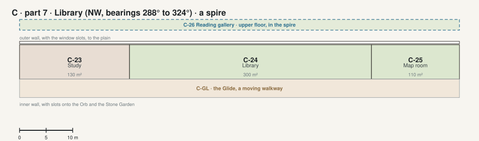

The Crown · part 7 · Library NW, bearings 288° to 324°, a spire

| Code | Room | What it is for | Also | Size | Two of a kind |
|---|---|---|---|---|---|
| C-23 | Study ◉ 360° | Jim's day desk in the north light: writing, his memoirs, calls. | 130 m² | L1-04 Study | |
| C-24 | Library ◉ 360° | Reading in daylight: two floors of walnut shelves with a working collection, a gallery and a spiral stair. | 300 m² | L1-27 Great library | |
| C-25 | Map room ◉ 360° | A globe of Mars 3 m across and chests of maps: planning trips and flights. | 110 m² | ||
| C-26 | Reading gallery | Upstairs in the Library spire, a reading room under the roof. | 540 m² · upper floor |